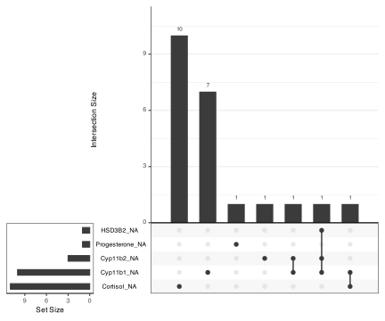
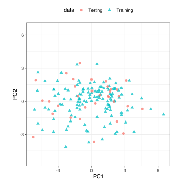
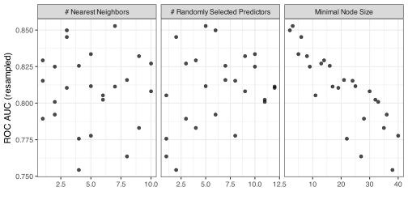
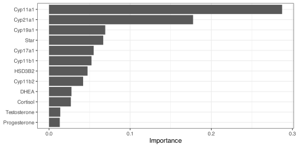
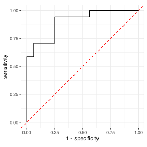

| Assay | N | toxic N = 831 |
nontoxic N = 791 |
|---|---|---|---|
| Cyp11a1 | 162 | 1.26 (0.94, 1.77) | 0.78 (0.65, 1.00) |
| Cyp11b1 | 152 | 3 (2, 12) | 1 (1, 2) |
| Unknown | 9 | 1 | |
| Cyp11b2 | 159 | 6 (1, 22) | 2 (1, 5) |
| Unknown | 3 | 0 | |
| Cyp17a1 | 162 | 1.19 (0.78, 2.13) | 1.03 (0.78, 1.30) |
| Cyp19a1 | 162 | 3.6 (1.5, 8.3) | 1.6 (1.1, 2.4) |
| Cyp21a1 | 162 | 2.8 (1.1, 7.2) | 1.1 (0.8, 1.9) |
| HSD3B2 | 161 | 1.29 (0.63, 3.24) | 1.02 (0.65, 1.58) |
| Unknown | 1 | 0 | |
| Star | 162 | 1.58 (0.90, 3.05) | 1.01 (0.73, 1.34) |
| Progesterone | 161 | 112 (56, 331) | 95 (62, 194) |
| Unknown | 1 | 0 | |
| Testosterone | 162 | 78 (52, 104) | 83 (69, 103) |
| DHEA | 162 | 82 (60, 111) | 81 (68, 115) |
| Cortisol | 151 | 91 (45, 116) | 92 (64, 106) |
| Unknown | 10 | 1 | |
| 1 Median (Q1, Q3) | |||
Model Results
Data Description
The original data consisted of 12 assays on 162 compounds. Each compound was pre-labeled into one of two classes: “toxic” and “nontoxic”.
The breakdown of the assays and their class distributions:
Note that 5 assays contained missing values. The patterns of missingness can be shown via an “UpSet” plot:

These values will be imputed during the data analysis.
Data Splitting
An initial split where 80% of the compounds were allocated to the training set (n = 129) and 20% for testing (n = 33). The class frequencies are relatively balanced, so an unstratified split was used.
To assess if the training and testing set has approximately the same distribution, we conducted a principal component analysis (PCA) to show how the assays project down to two dimensions. Before conducting PCA, we used a 5-nearest neighbor imputation strategy as well as an Ordered Quantile standardization routine to coerce the assays to a standard scale and also to remove skewness from their distributions. The PCA loadings were computed from the training set, and these values were used to project the training and testing sets.

The results show overlapping distributions and no apparent outliers.
Using the training set, five repeats of 10-fold cross-validation were created. These will be used to tune our machine learning model.
Model Tuning
An oblique random forest model was used to classify the compounds as “toxic” or “nontoxic”. There are a few tuning parameters to be optimized:
The number of neighbors used for imputing missing data. Values between 1 and 10 were investigated.
The number of assays to use as split candidates, a.k.a \(m_{try}\), was marked for optimization. Values from 1 to 12 were used as candidate values.
The number of compunds required to make additional splits was also tuned between values of 2 and 40 compounds.
An Audze-Eglais space-filling design was used to create the grid of 25 parameter candidates.
For each candidate, the cross-validated area under the ROC curve was computed and these values are used to determine the final settings for the random forest model. The results are:

The left panel shows no trend, indicating that the data did not have a preference for how many neighbors should be used. There was a weak relationship between the AUC and \(m_{try}\) and a very strong trend where the smaller the number of compounds required to split, the better the AUC.
The numerically best combination was: imputation using seven neighbors, five assays used for splitting, and three compounds require for splitting. Resampling estimates that the area under the ROC should be about 0.853 with a 90% confidence interval of (0.762, 0.885).
The final random forest model was fit with these settings using the entire training set. The random forest importance scores for this model were:

Test Set Results
When this model was applied to the test set, the confusion matrix was:
| Prediction |
True Values
|
|
|---|---|---|
| toxic | nontoxic | |
| toxic | 12 | 3 |
| nontoxic | 5 | 13 |
The test set area under the ROC curve was 0.901 with a 90% confidence interval of (0.807, 0.974). The ROC curve:
